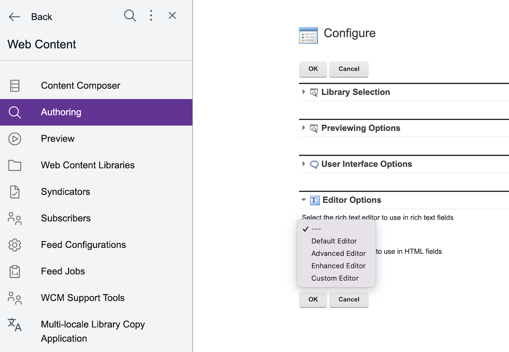

HCL Digital Experience 9.5 Docker and Container initialization performance
Beginning with HCL Digital Experience 9.5 Container Update CF192 release, container DX applications initialization performance is improved. Review the following guidance for information, defaults, and options to manage container applications initialization performance when deployed to Docker, Red Hat OpenShift, and Kubernetes platforms.
Introduction
When deployed on the supported Red Hat OpenShift and Kubernetes environments, you must start the HCL Digital Experience core platform pod before it can start serving requests. After starting the pod, initialize the HCL Digital Experience Portal and Web Content Manager core before the OpenShift or Kubernetes readiness probes can determine if the pod is able to serve requests.
The OpenShift or Kubernetes readiness probe executes an HTTP request to the "/wps/portal" or "/ibm/console" page and ensures that it responds. Initialize the HCL DX core by executing the "startServer.sh WebSphere_Portal" process before the readiness probe completes successfully. This starts the IBM WebSphere Application Server profile containing the HCL DX Portal and Web Content Manager. This initialization process includes several IBM WebSphere and HCL DX applications, including select portlets that must initialize before the HCL DX Core can respond to the readiness probe.
In DX 9.5 Container Update CF192 and higher, most DX portlets not required for initial operations default to a "lazy load" initialization to support a faster initialization of DX core Portal and Web Content Manager in Docker, Red Hat OpenShift, and supported Kubernetes platforms. With this means of initialization, an HCL DX portlet application is not started by a user request, but by the first standard HTTP request that occurs and renders a DX portal page that contains the portlet application on the server. Direct access to the portlet (for example, an Ajax request), does not start the portlet. In addition, some IBM WebSphere applications not required for initial operations are not started automatically.
ConfigEngine Tasks
The following ConfigEngine tasks are deployed to support improvements to HCL DX Core initialization times:
- stop-autostart-docker-applications
- default-autostart-docker-applications
- start-advanced-editor-applications
stop-autostart-docker-applications
The stop-autostart-docker-applications task is executed during the Docker image build for DX Core when initialized on Docker, Red Hat OpenShift, or Kubernetes platforms. This task manages the following functions:
- It stops the Advanced Rich Text Editor (Textbox.io) Services and, beginning with CF210, the Enhanced Rich Text Editor (TinyMCE) Services applications from starting automatically. With this change, the Tiny Image Proxy, Hyperlinking, and Spelling services are not automatically started.
- It "lazy loads" all DX portlets that do not require the Portal and WCM functions to operate.
- Portlets required for DX operations that will be loaded and initialized include for example, theme modules that are loaded from Portlets. These portlets must be started in order for the theme modules to load. The "Login" and "WCM Local Rendering" portlets are also in this list as they are required to present the Woodburn Studio demonstration site entry page, and therefore the Kubernetes readiness probe. Note that the readiness probe defaults to the WebSphere Application Console via probe functions that execute an HTTP request to the "/wps/portal" or "/ibm/console" page and ensures that it responds. See List of portlets and applications that are automatically initialized by defaults below for the list of portlets that are needed for DX operations and will automatically load.
default-autostart-docker-applications
The default-autostart-docker-applications task restores the autostart status of all applications to their "out-of-the-box" status. This task does not apply "lazy load" initialization.
start-advanced-editor-applications
If not started, the start-advanced-editor-applications task starts the Advanced Rich Text Editor (Textbox.io) and, beginning with CF210, the Enhanced Rich Text Editor (TinyMCE) applications, and all accompanying server side components. This task sets all applications to autostart when the HCL DX Portal server is started.
-
Prerequisites:
It is recommended that Portal Administrators run the start-advanced-editor-applications task to start the Advanced Rich Text Editor (Textbox.io) and, beginning with CF210, the Enhanced Rich Text Editor (TinyMCE) server side components. After starting these applications, the Tiny Image Proxy, Hyperlinking, and Spelling services are available when you select the Advanced or Enhanced Editor in the Web Content Manager Authoring > Configure > Editor Options interface.

Important Considerations and Limitations of the Container Initialization Improvements
As a result of not autostarting these applications and portlets, initialization of DX Portal may be faster, but the initial access of most pages is slower because the application/portlet must now be initialized. Note that this only affects the first access of that application/portlet because initialization is a once-per-system activity. As new DX PODS are started, initialization of DX pages with optional applications and portlets is slower on the first HTTP request.
Using Advanced Editors for WCM
Beginning with Container Update CF192, and with the default settings for "lazy load" of optional portlets and applications, the Advanced Rich Text Editor (Textbox.io) Services and, beginning with CF210, the Enhanced Rich Text Editor (TinyMCE) Services for WCM are NOT started. This is not a "lazy load" but rather a stop of the Advanced and Enhanced Rich Text Editor Services ears containing the advanced and enhanced editors server side components. Before configuring these applications in the Web Content Manager Authoring Portlet configuration settings, it is recommended to start the Advanced Rich Text Editor and Enhanced Rich Text Editor Services applications by running the start-advanced-editor-applications ConfigEngine task. Running this task makes the editors server side functionalities, Image Proxy, Hyperlinking, and Spelling services available for content authors.
The configuration changes made once this task completes remains in a persisted DX profile.
Source File listing of HCL DX required portlets and applications that will autostart:
The introduced ConfigEngine tasks use four files to obtain the list of HCL DX portlet/applications to modify. All the files are located in the same directory:
{configuration root}/PortalServer/installer/wp.config/config/includes
For example, a list of this reference system is located at:
/opt/HCL/PortalServer/installer/wp.config/config/includes
The four import files are:
advancedEditorEAR - Enable the WCM Advanced and Enhanced Editors and Services applications
defaultListOfEnabledApps - The out of the box autostart parameters
listOfAppsDockerDisable - List of all portlets and applications where autostart is now initially disabled
listOfAppsDockerEnable - List of portlets and applications to ensure autostart is enabled after having disabled those in listOfAppsDockerDisable
-
List of portlets and applications that are automatically initialized by default
PA_Login_Portlet_App
PA_Site_Builder
PA_WCMLRingPortJSR286
PA_WCM_Authoring_UI
PA_Pingpageproperties
PA_Styles
PA_Wiring
PA_wp.pzn.ui.actions
PA_Orphaned
PA_VanityUrl
PA_New_Page
PA_Create_Content
PA_Applications
PA_Toolbar_Content
PA_Toolbar_SiteMap
PA_Impersonation
PA_WebScanner
PA_Theme_Creator
PA_Pmizationframework
TinyEditorsTextboxio
TinyMCE
-
List of portlets and applications initialized via "lazy load"
AJAX Proxy Configuration
Default_Theme_85
Dojo_Resources
EphoxEditLive
ibmasyncrsp
isclite
JavaContentRepository
jQuery_Resources
Live_Object_Framework
lwp.addtosametimelist_war
lwp_groupsViewer_war
lwp_peoplefinder_war
lwp_peoplePicker_war
MashupCommonComponent
Mobile_Preview
PA_Applications
PA_AtiveSiteAnalytics
PA_Banner_Ad
PA_Blurb_1
PA_CM_Picker
PA_ContactList
PA_Create_Content
PA_CredVaultDialog
PA_Dialog_Stack
PA_Dialog_State
PA_DynamicUIApp
PA_EitThemeProperties
PA_FedDocumentsPicker
PA_Feed_Service_Admin
PA_FS_Disambiguation
PA_Impersonation
PA_IWidget_Wrapper
PA_Login_Portlet_App
PA_MosoftExchange2010
PA_New_Page
PA_Orphaned
PA_Page_Picker
PA_Pingpageproperties
PA_Pmizationframework
PA_PortalWSRPProxy
PA_PTransformationApp
PA_Search_Center
PA_SearchSitemapPort
PA_Selfcare_Port_App
PA_Site_Builder
PA_spa
PA_Styles
PA_Tag_Cloud
PA_Theme_Creator
PA_Theme_Manager
PA_Toolbar_Content
PA_Toolbar_SiteMap
PA_VanityUrl
PA_WCM_Authoring_UI
PA_WCMLRingPortJSR286
PA_WCMSupportTools
PA_WebDockPortServlet
PA_WebScanner
PA_Wiring
PA_WPF
PA_wp.feedspace
PA_wp.pzn.ui.actions
PA_wp.vwat.manager
Personalization_Lists
Personalization_Workspace
Practitioner_Studio_Theme_95
PSESearchAdapter
pznpublish
pznscheduler
PZN_Utilities
Quickr_Document_Picker
RESTAPIDocs
Seedlist_Servlet
Simple_Theme
SpellChecker
StartupCheck
SwaggerUI
Theme_Dev_Assets
ThemeDevSite
Theme_Modules
Toolbar_Modules
Toolbar_Theme_85
UserProfileRESTServlet
wci
wcm
WCM_EXTENSION
wcm-remote-admin-ejb
Woodburn_Studio_Theme_95
worklight_extension
wp.scriptportlet.editor
wp.scriptportlet.importexport
wps
wps_scheduler
wp.theme.ckeditor.ear
wp.theme.toolbar.xslt
wp.vwat.servlet.ear
WSPolicyManager